Testing menggunakan
Junit & FitNesse
Nama : Albari Berki Pradhana
NIM : 1806384
Pada blog ini saya akan menjelaskan hasil testing saya terhadap pada aplikasi yang
sedang saya bangun yaitu LesPlantes menggunakan Junit dan FitNesse.
Adapun class yang akan saya uji adalah:
Payment
Stock
Discussion
Langkah awal
Hal pertama yang saya lakukan adalah mengunduh file.jar FitNesse disini
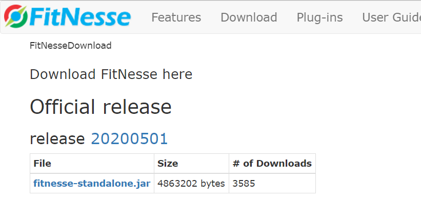
Kita bisa langsung memilih File fitnesse-standalone.jar seperti pada gambar diatas
Setelah itu saya perlu menjalankan web server fitnessenya dengan cara mengakses command prompt
pada directory file .jar yang telah di unduh dan menjalankan kode seperti pada gambar dibawah ini:
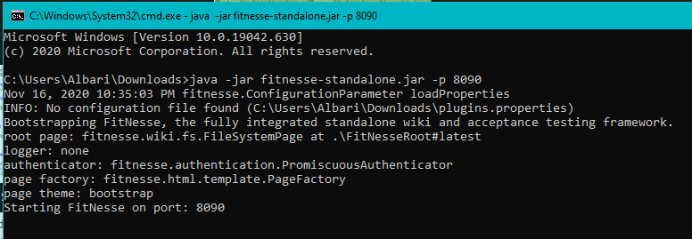
Menyiapkan File java
Saya beri contoh untuk file class Discussion dengan method request:
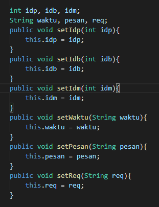
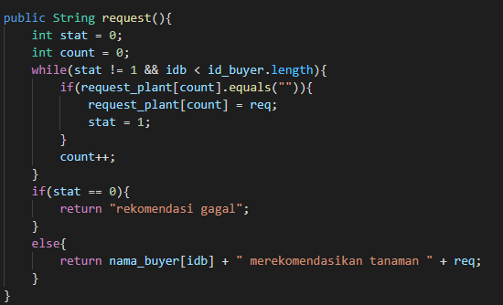
Pembuatan Testcase
pada web server fitnesse, saya dapat membuat page testcase yang akan dihubungkan
dengan directory file yang akan ditest dengan menuliskan pathnya seperti berikut:
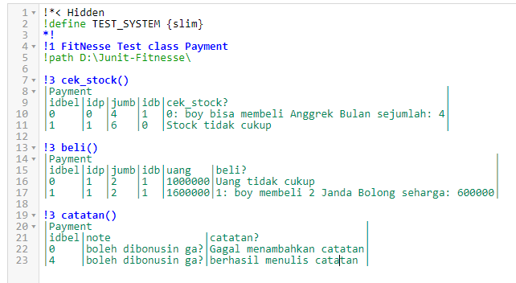
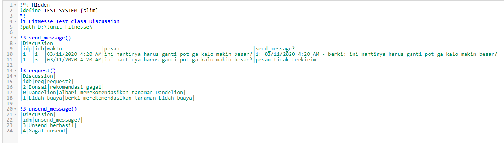
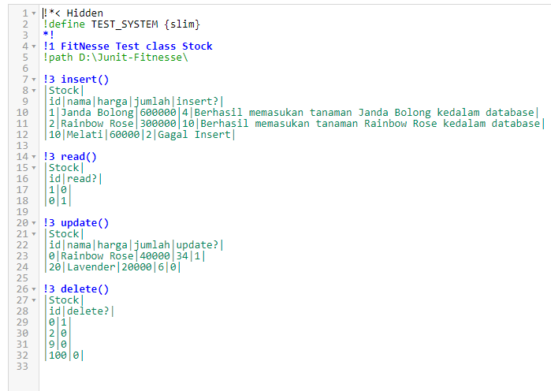
Memunculkan Opsi Test
Setelah kita membuat page testcasenya, untuk versi terbaru dari fitnesse
tidak akan otomatis muncul opsi test pada navbar seperti ini:
Sehingga kita harus menambahkan "?properties" pada url seperti dibawah ini:
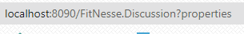
Setelah itu pilih opsi test dan klik save properties:
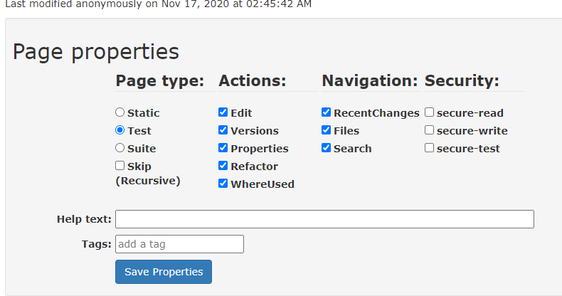
Maka akan muncul opsi test pada navbar seperti dibawah ini:
Run file java
Sebelum melakukan Pengujian, run terlebih dahulu File java yang akan di uji:
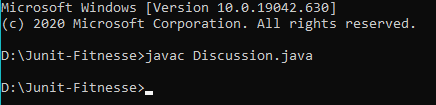
Siap Untuk Diuji
Setelah file yang akan diuji selesai di run maka save pagenya dan
pastikan semua testcase sudah benar
class Stock:
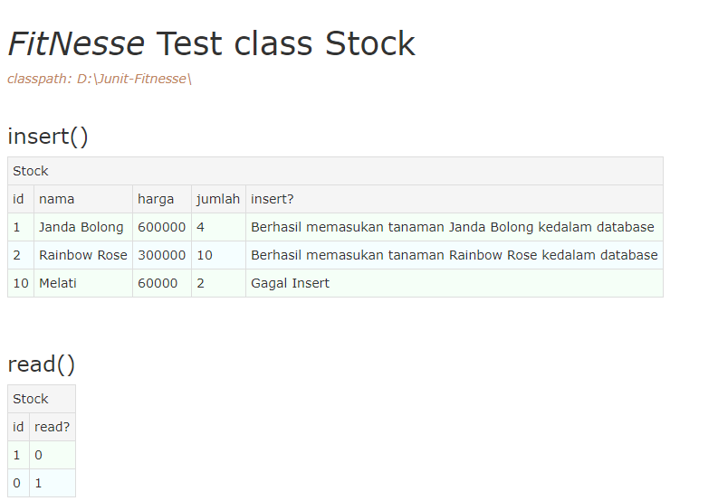
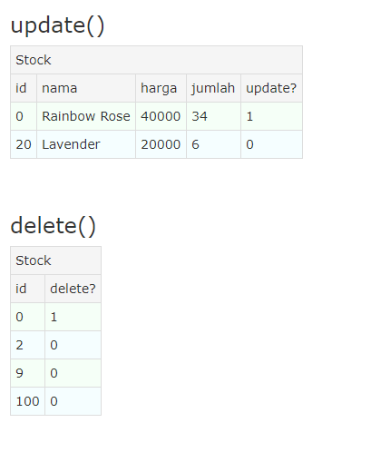
class Payment:
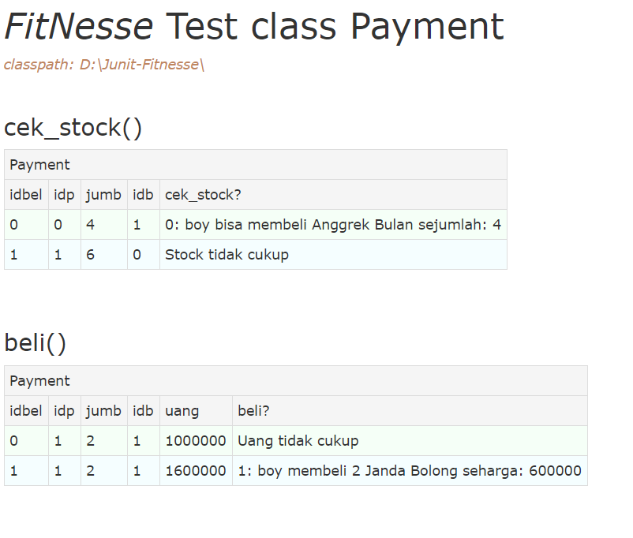
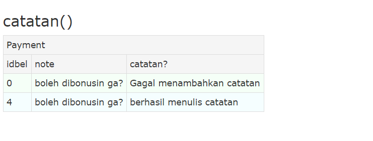
class Stock:
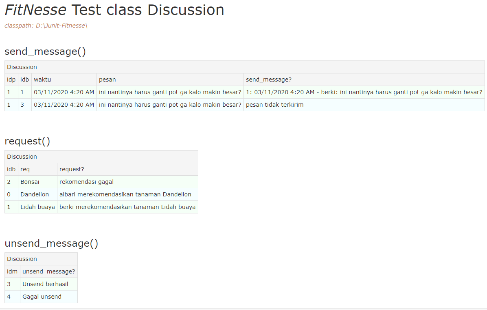
Setelah semuanya siap diuji, saya tinggal menekan button test pada navbar
Hasil Uji
class Payment:
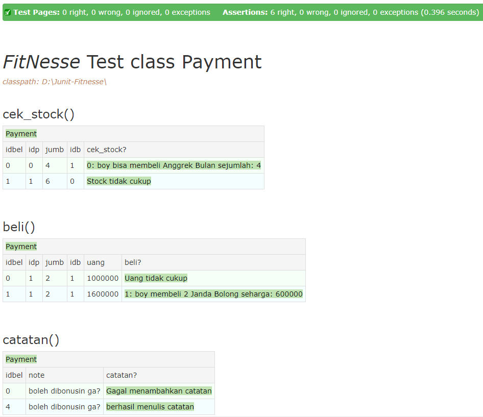
class Discussion:
 class Stock:
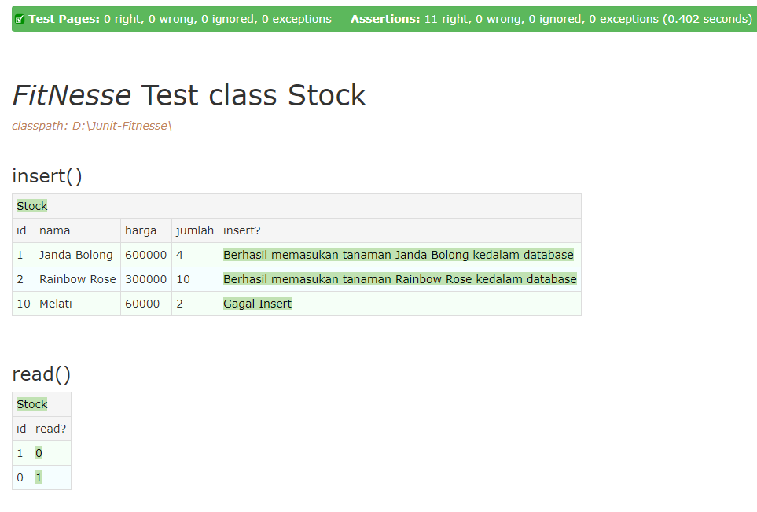
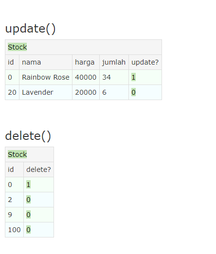
JUnit test
Saya pun menggunakan Junit untuk pengujian dengan contoh seperti dibawah ini:
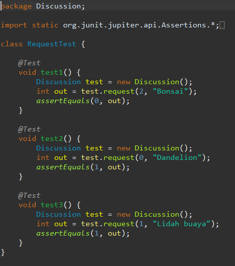
Dan hasil yang didapatkan secara keseluruhan seperti dibawah ini:
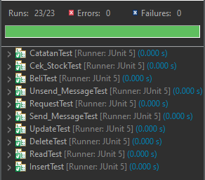
Sekian Pengujian saya terhadap Aplikasi yang bsaya buat menggunakan
JUnit dan FitNesse semoga bermanfaat
class Stock:
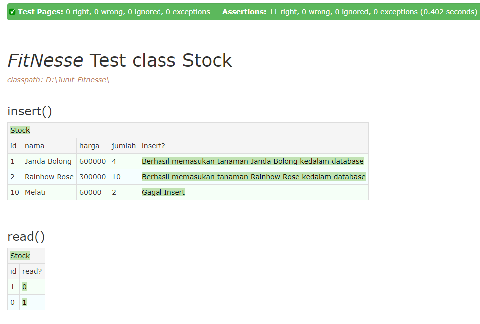
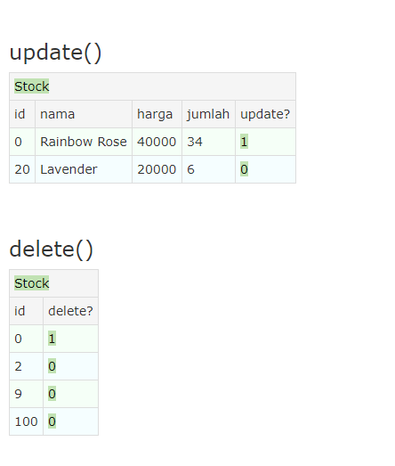
JUnit test
Saya pun menggunakan Junit untuk pengujian dengan contoh seperti dibawah ini:
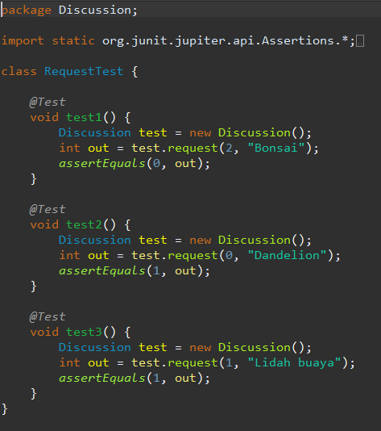
Dan hasil yang didapatkan secara keseluruhan seperti dibawah ini:
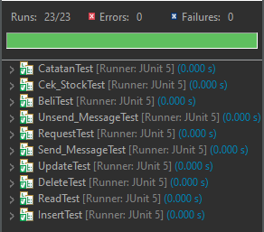
Sekian Pengujian saya terhadap Aplikasi yang bsaya buat menggunakan
JUnit dan FitNesse semoga bermanfaat